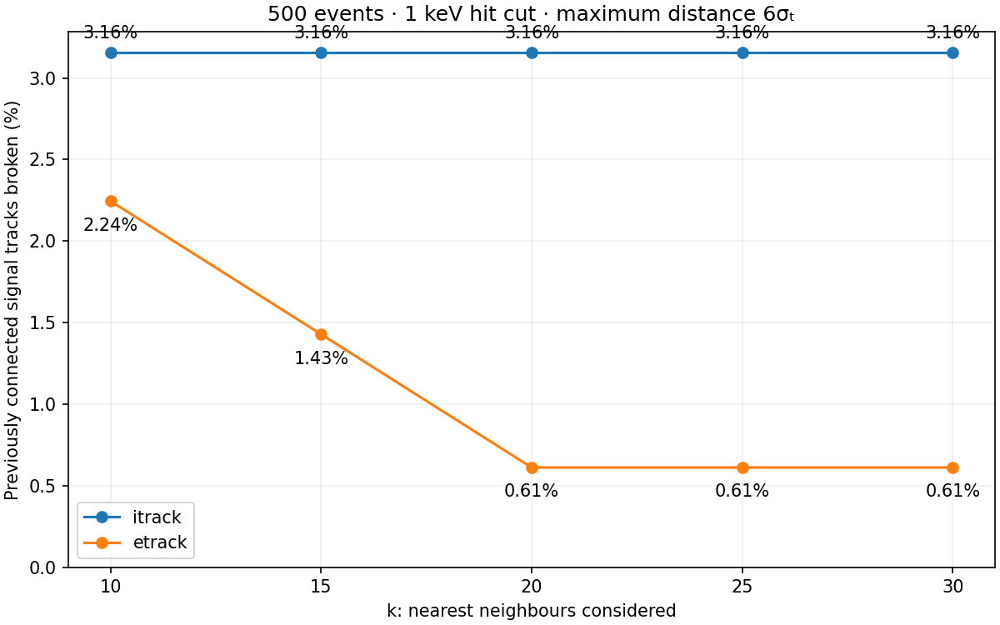

Reference sample: signal-only tracks connected before the cut at k = 10. The denominator stays fixed.
| k | itrack | etrack |
|---|---|---|
| 10 | 12 / 380 (3.16%) | 11 / 490 (2.24%) |
| 15 | 12 / 380 (3.16%) | 7 / 490 (1.43%) |
| 20 | 12 / 380 (3.16%) | 3 / 490 (0.61%) |
| 25 | 12 / 380 (3.16%) | 3 / 490 (0.61%) |
| 30 | 12 / 380 (3.16%) | 3 / 490 (0.61%) |
| k | itrack: broken / initially connected | etrack: broken / initially connected |
|---|---|---|
| 10 | 12 / 380 (3.16%) | 11 / 490 (2.24%) |
| 15 | 12 / 381 (3.15%) | 7 / 491 (1.43%) |
| 20 | 12 / 381 (3.15%) | 3 / 492 (0.61%) |
| 25 | 12 / 381 (3.15%) | 6 / 495 (1.21%) |
| 30 | 12 / 381 (3.15%) | 6 / 495 (1.21%) |

Events with other than one connected component after the cut, divided by all 500 events.
| k | itrack | etrack |
|---|---|---|
| 10 | 442 / 500 (88.4%) | 20 / 500 (4.0%) |
| 15 | 442 / 500 (88.4%) | 16 / 500 (3.2%) |
| 20 | 442 / 500 (88.4%) | 11 / 500 (2.2%) |
| 25 | 442 / 500 (88.4%) | 11 / 500 (2.2%) |
| 30 | 442 / 500 (88.4%) | 11 / 500 (2.2%) |
A graph containing every possible connection within 6σₜ gives the same components as k = 30 in all 12 cases. The closest gap between components exceeds the distance limit.
| Event | 6σₜ limit (mm) | Smallest component gap (mm) | Components |
|---|---|---|---|
| 13 | 4.936 | 5.000 | 2 |
| 124 | 5.717 | 6.000 | 2 |
| 156 | 4.166 | 5.000 | 2 |
| 254 | 4.923 | 5.000 | 4 |
| 354 | 5.760 | 9.434 | 2 |
| 361 | 5.231 | 5.657 | 2 |
| 427 | 4.895 | 5.000 | 3 |
| 442 | 4.601 | 5.000 | 2 |
| 487 | 4.933 | 5.000 | 2 |
| 539 | 4.235 | 5.000 | 2 |
| 715 | 8.442 | 9.849 | 2 |
| 716 | 7.997 | 10.000 | 2 |